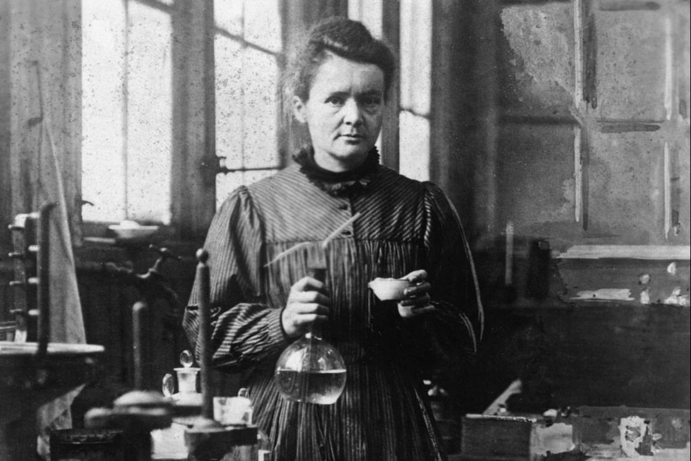
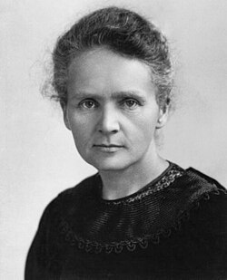
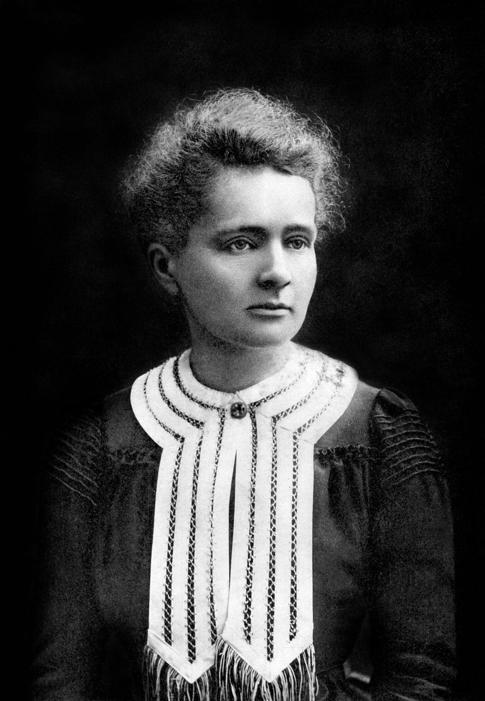

Nació el 7 de noviembre de 1867 en Varsovia, Polonia. Migró a Francia para estudiar porque las mujeres no podían asistir a la universidad en su país.
Fue una estudiante brillante y una científica extraordinaria. Descubrió el radio y el polonio, elementos claves para la historia de la ciencia.
Fue la creadora del concepto de radiactividad. Ganó el Premio Nobel de Física en 1903 y el de Química en 1911, siendo la única persona que ha ganado dos Nobeles en áreas científicas distintas.
Creó unidades móviles de rayos X para atender heridos en la Primera Guerra Mundial. Fundó institutos científicos en París y Varsovia. Rompió barreras en un mundo dominado por hombres.
Murió el 4 de julio de 1934 por anemia aplásica causada por exposición prolongada a radiación, debido a su trabajo pionero. Es un icono absoluto de la ciencia.
Su legado cambió para siempre la física, la química y la medicina. Es un símbolo de determinación, genialidad y valentía científica.